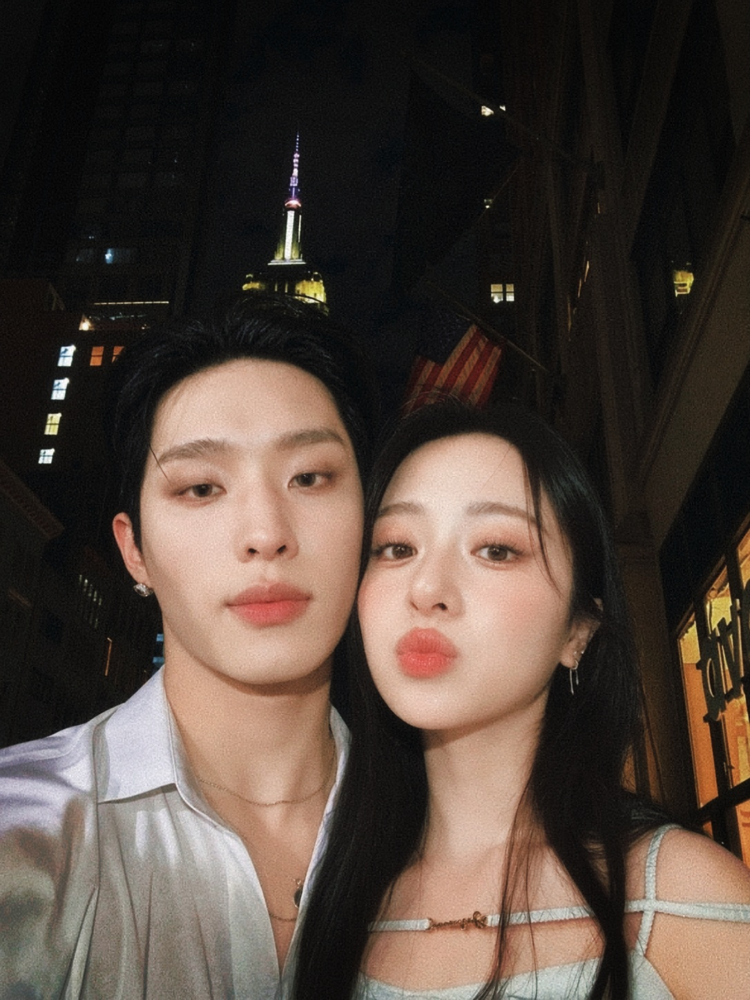
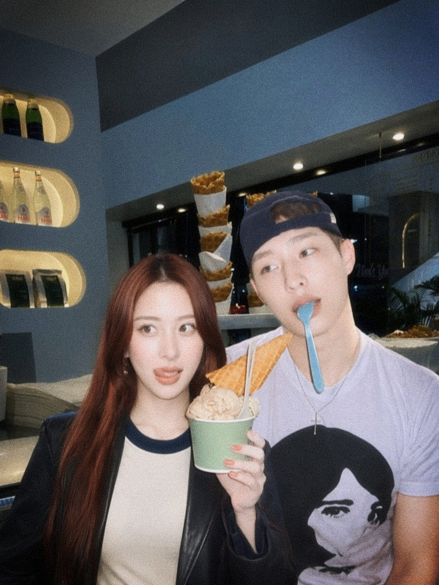
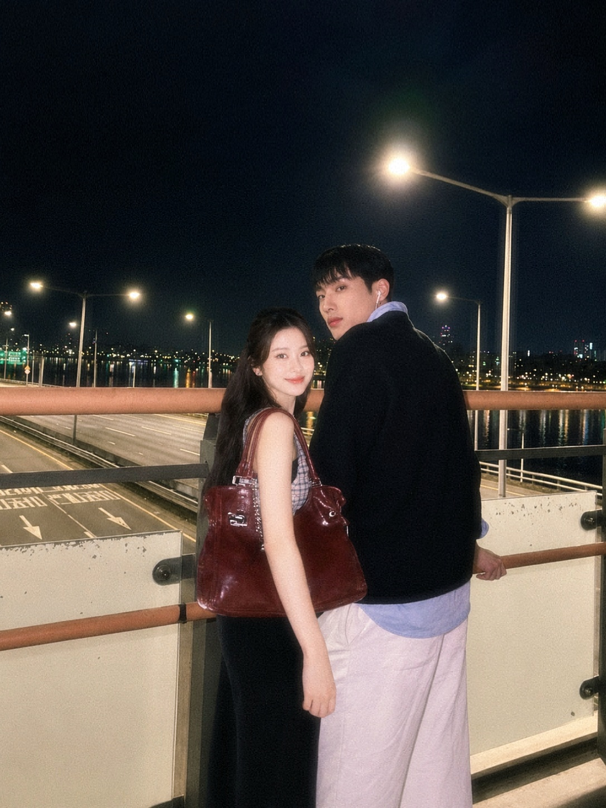

Analisis Hubungan: Sistem Berjalan Normal
Berdasarkan seluruh data yang pernah dikumpulkan, kamu bukan sekadar bagian dari hidupku. Kamu adalah satu-satunya variabel yang selalu berhasil membuat sistemku berjalan sebagaimana mestinya.
- Permanent Favorite: Dari sekian banyak orang, cuma kamu yang menetap di hatiku.
- Emotional Support: Banyak hal terasa lebih ringan karena ada kamu.
- No Uninstall Option: Sistem sudah mencoba mencari opsi untuk berhenti mencintaimu. Error: opsi tidak ditemukan.
Hasil Resmi: Untuk Kesayanganku
Setelah melakukan penelitian panjang, mengumpulkan seluruh bukti, kenangan, dan tawa kita... hasil akhirnya tetap sama: Aku sayang kamu.
Memori Kita



Untuk orang kesayanganku,
Mungkin tulisan ini nggak seberapa, tapi ini adalah caraku mengabadikan hal-hal kecil tentang kita.
Terima kasih sudah sabar dengan segala kekuranganku. Terima kasih karena tetap menjadi tempat yang terasa hangat bahkan ketika hari-hariku sedang tidak baik-baik saja.
Semoga langkahmu selalu dipertemukan dengan hal-hal baik, dan semoga kamu tidak pernah merasa sendirian dalam mengejar semua yang kamu impikan.
Kalau kamu bertanya apakah perasaanku masih sama, jawabannya: Iya. Akan selalu kamu.
Your Favorite Person,
[Tulis Namamu di Sini]